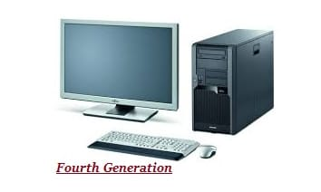

Introduction


link for youtube 4th gen
The period of fourth generation was from 1971-1980.The fourth genaration computers uses microprocessors which was 1st indriduse by intel,invented by their employee ted hoff.
Computers of fourth generation used Very Large Scale Integrated (VLSI) circuits.when we pay attention about the language of 4 genration computers it use to syntax and it is very close to human language.
All the high-level languages like,COBOL,FORTAN,BASIC,FASCAL as well as 3 genaration and C, C++, DBASE etc., were used in this generation.
the first personal computer or pc developed by IBM computers belong to this genaration.In this genaration also develop a portable computers and computers started in use for data communication.third genaration
computers were essentially scaled down version of main frame computers,wheres the fourth genaration,s origins are fundamentaly differently.
Time Period Of Generation
The period of fourth generation computers was from 1971 to present with micro processors and also micro processors introduce by ted hoff for intel . this time period is 1971 -1980 servaral oparation systems were developed.
likewise m.s dos and M.s windows. in Fourth generation computers also saw the development of GUIs, the mouse and handheld devices. the first personal computers also developed by IBM computers and apple macintosh.
link for youtube
Basic technology used
When we pay attention about technology of fourth genaration computers it IC were replaced with microprocessors.A micro processors chip consist of entire central processing unit in a single chip.
The LSI(Large scale intergration) circuit and VLSI (Very large Scale Intergration) circuits was designed.in now days all of computers are using (GUI) Graphic unit interface was introduced by it this genaration.it also introduced mouse and hand held devices.
this genaration of computers given rise to personal computers, semiconductor memory ,resulting in fast random accsess memory.
High-level programming languages are used for the writing of programs COBOL,FORTAN,BASIC,FASCAL also C, C++, DBASE etc. Even though fourth genaration computers small size, when comparing with previous genaration computer it,s higher speed than previous computers.
and in this genaration calculation system has trancformed to per-second but previous genaration was nano second and also main memory was increased in the form of EPROM and SRAM but 3rd genaration it was PROM and DRAM.
in the fourth genaration computers has a both of important aspect it s microprocessor , Semiconductor memory the first micro processor was intel 4004(1971)and also it has developed untill IBM power9,AMD RYZEN (2017).